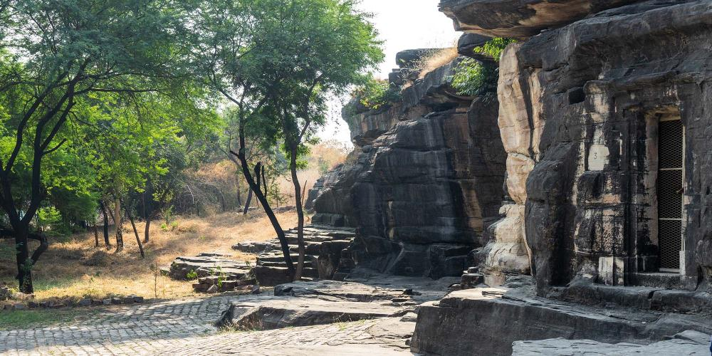
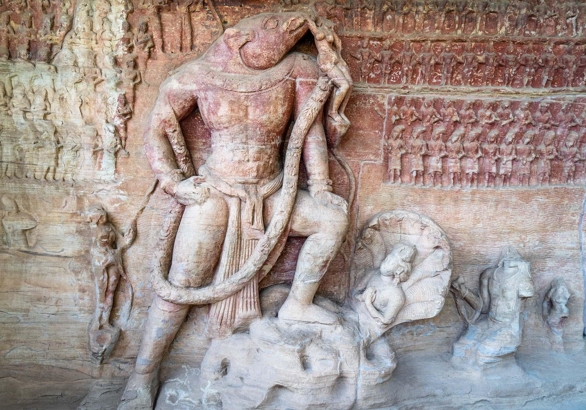
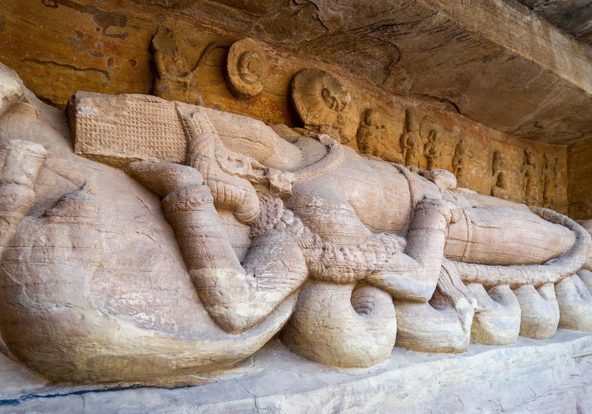
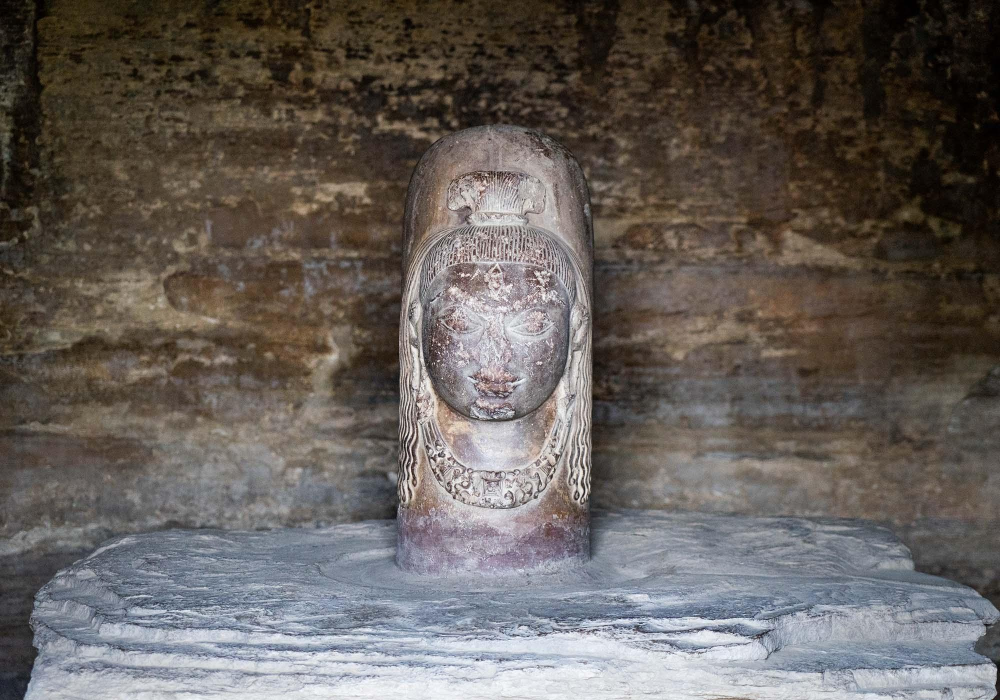

Udaigiri Caves have a remarkable collection of sculptures that were carved into the rocks
around the 4th and 5th centuries AD.

Udaigiri Caves are just 16 kilometres from Sanchi and offer another opportunity to see some beautiful
rock carvings. There are 20 caves here – 18 Hindu and 2 Jain – that have religious iconography and
stories sculpted from the rocks. They were made over a period of many generations between the 4th and
5th centuries AD.
The caves were excavated from the solid rocks and most have beautifully-chiselled entrances,
architraves, and pillars. Some of the caves have richly-carved doorways guarded by mythical beings, with
pillared porticos protecting them from the weather.
The most impressive sculpture at Udaigiri Caves is of Vishnu in his incarnation as a boar raising the
earth goddess Prithvi from the oceans. The enormous artwork is 14 metres wide and 7 metres high and has
dozens of worshippers carved on either side.

Another sculpture to note is the 3.6-metre-long image of Sheshashayi Vishnu lying on the coils of a snake.

It’s also worth making a special mention of an unusual ‘mukhalinga’ in one of the caves, which is a ‘linga’
with a face carved on it.

Udaigiri Caves make a perfect visit as part of a trip to Sanchi. It’s another good example of the
beautiful stone artistry and the evolution of religion in the region.
Location
Contact Information
Archaeological Survey of India - Bhopal
- Phone: +91 755 255 8250
- Email: circlebhopal.asi@gov.in
- Website: http://asimustsee.nic.in/buddhist-mon-sachi.php
Madhya Pradesh Tourism Board
- Sanchi Stupa
Sanchi 464661 IN
- MP Tourism Help Line: +91 755 255 0588
- Website: https://www.mptourism.com/destination-sanchi.php
>>>>>>>>>>End of Site<<<<<<<<<<<